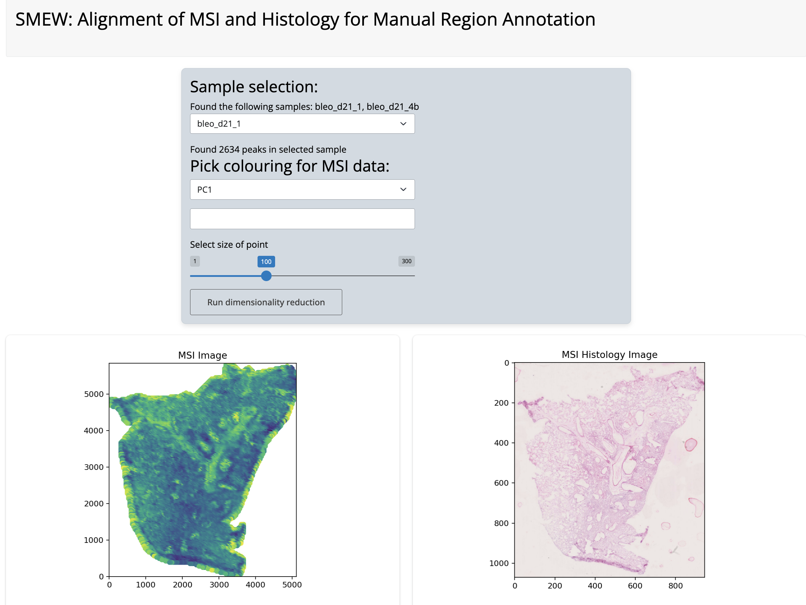
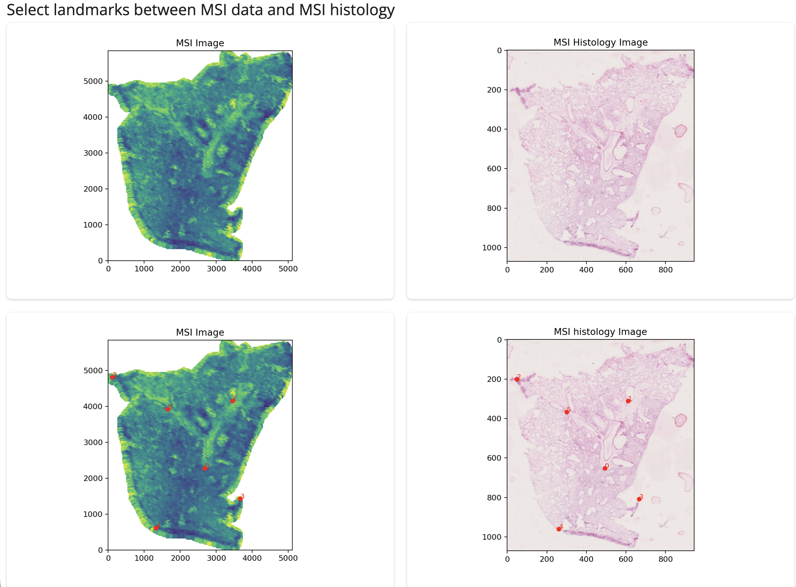
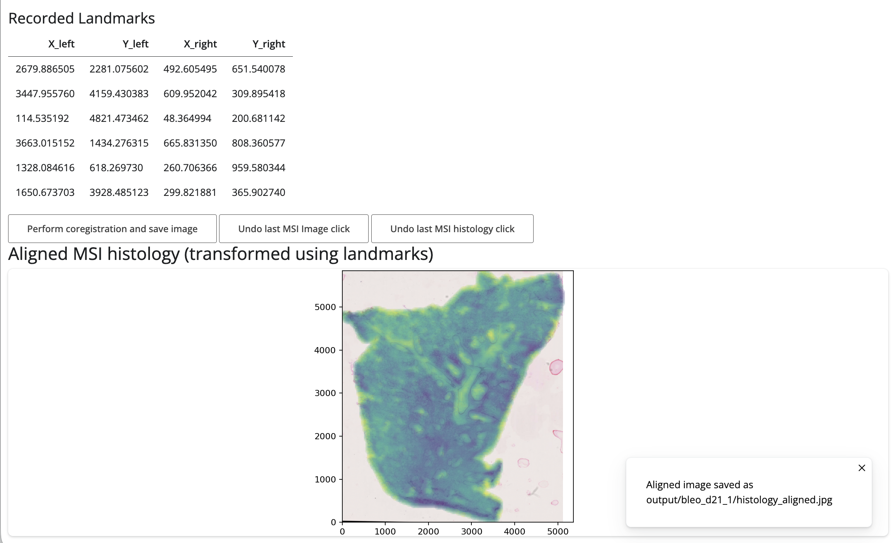

Aligning histology images with MSI data for use in SMEW
Source:vignettes/articles/histology.Rmd
histology.RmdSMEW enables integration of histology images for manual region
annotation and visualisation of spatial patterns in the context of
tissue structure. To align histology images to your MSI data for use in
SMEW, you can use the inst/scripts/histology_shiny_app.py
script provided in the package. This script allows you to perform manual
alignment of histology images to the spatial coordinates of your MSI
data, and outputs aligned images that can be used within SMEW.
Data format required for histology image alignment
To use inst/scripts/histology_shiny_app.py for aligning
histology images to MSI data, your input data should be organised as
follows:
-
input/MSI_metadata.csv:
- A CSV file where each row represents a pixel or spot.
- Must include columns:
pixel_id(unique identifier),Sample(sample name),x(x-coordinate),y(y-coordinate). - Example columns:
pixel_id,Sample,x,y - This should be the same metadata file used for creating the SMEW
app, ensuring that
pixel_idmatches the first column of the intensity matrix and thatSamplenames match the subfolder names for histology images.
-
input/MSI_intensities.csv:
- A CSV file with
pixel_idas the first column (matching those inMSI_metadata.csv). - Each row corresponds to a pixel/spot; columns after
pixel_idare intensity values for each peak. - Example columns:
pixel_id,peak1,peak2,... - This should be the same intensity matrix used for creating the SMEW app.
- A CSV file with
-
input/{Sample}/histology.*:
- For each sample, a subfolder named after the sample (matching the
Samplecolumn). - Inside each sample folder, a histology image file (formats:
.tiff,.png,.jpg) namedhistology.tiff,histology.png, orhistology.jpg.
- For each sample, a subfolder named after the sample (matching the
Installing dependencies
This alignemnt script is based on the MAGPIE multi-modal alignment framework and you can use the conda environment provided in its GitHub repository to install all the required packages.
Alternatively, you can install the required Python packages using pip:
pip install matplotlib numpy pandas scikit-image shinyRunning the histology alignment app
To run the histology alignment app, navigate to the folder containing
this input folder in your terminal. Either copy the script from
inst/scripts/histology_shiny_app.py into a new Python file
in this folder, or find the location using
system.file("scripts/histology_shiny_app.py", package = "smew")
in R. Then run the following command in your terminal:
shiny run <identified location>/histology_shiny_app.pyThis will launch the Shiny app in your default web browser. The app
will automatically detect the samples from your
MSI_metadata.csv file and look for corresponding histology
images in the input/{Sample}/ subfolders. You can select a
sample and choose a dimensionality reduction of peak to view
spatially.

Histology alignment app
Next, you can select landmarks by clicking on the plot to select corresponding points between the MSI and histology images. There are undo buttons in case of mis-clicks.

Histology landmark identification
Once you have selected landmarks, you can click the “Perform
coregistration and save image” button to align the histology image to
the MSI coordinates. The aligned image will be shown and automatically
saved in output folder in your working directory, in a folder
named after the current sample as
histology_aligned.jpg.

Histology overlay
You can then use this folder as the histology_images_dir
parameter in create_smew_app() to include the aligned
histology images in your SMEW app for region annotation and
visualisation.